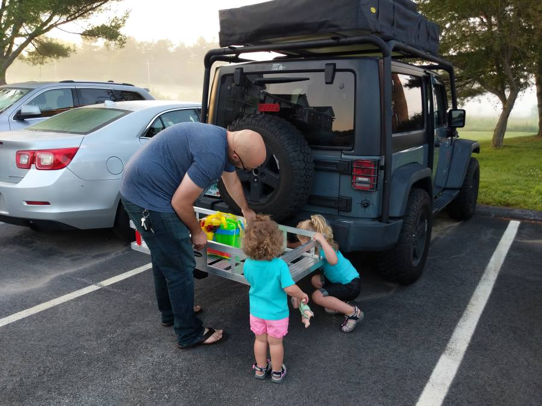
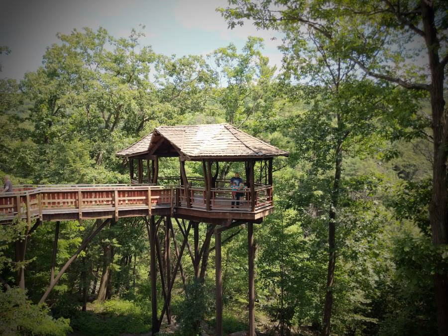
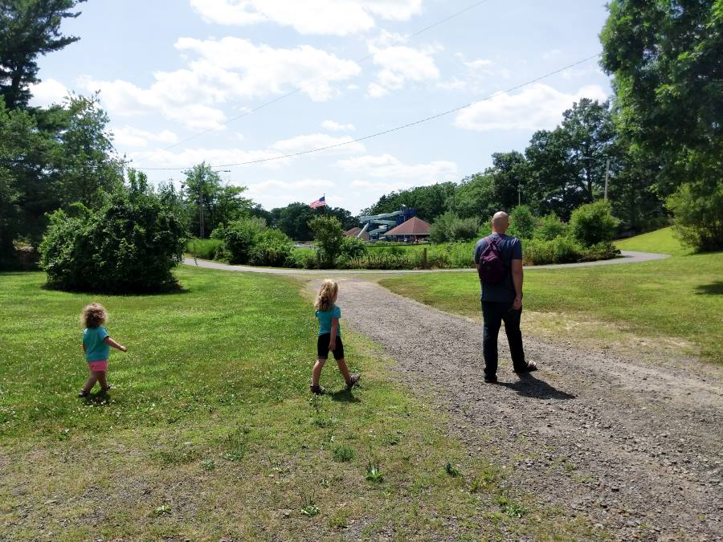

The plan was to leave at 3am
It was a cool morning, with the fog rolling in. Our alarm went off at 3am, and I promptly turned it off (old habbits die hard). A few hours later (around 5:30), Abigail wakes up in a panic. "CHRIS, what time is it! What happened to the alarm!?" She already knew the answer, but wanted me to know that she knew we were late.. And it was my fault (It was, I like to sleep in). BUT we are still a day early! (Well maybe 22 hours early)
We jumped into the shower, and got ready as quick as posible. Waking the girls up to get them cleaned up and dressed. After putting them in the carseats we spent the next 20 minutes loading up the Jeep. Despite the temperatures being in the mid 60s, we were soon covered in sweat. We felt the pressure of the clock. When I cosnstantly reminded Abigail that we were actually 22 hours ahead of schedule didn't help either.
 The girls HelpingIt wouldn't been a Pike Adventure if we didn't have to open the Roof Top Tent outside of our Apartment in order to stuff it full of Blankets and Pillows. Soon enough we were all packed into the Jeep and heading out... To the gas station and "Dunkin".
Finally on the road
The first stage of our route had us cutting down through Massachusetts, into Connecticut, and deep into Pennsylvania. We were going to Scranton, PA. About 15 minutes after leaving Rochester, all of the carefully packed boxes of toys were emptied out and Jenna had touched everything once. Whatever Jenna had, Thea had to play with to. Of course! The favorite was "Bingo DOT" as Jenna calls it. It was a clever Bingo game that Abigail made, with objects from the road we might see.
We stopped to get gas every few hundred miles, about 1/2 to empty. Just in case. Gas prices jumped quickly as we went South West. It was about $2.45 in NH, and by the time we got to Pennsylvania it was nearly $3.00
 Thirsty Jeep!
Thirsty Jeep!
The Hills.
It was pretty uneventuful until we got to Pennsylvania. We never realized how beautiful the area was, and how we would grow to hate the rolling hills of Pennsylvania. As we climbed up some steep inclines on the interstate, the MPG of the jeep took the opposite dive. It would of been nice if we could of maintaned the 70MPH, but pretty soon the Jeep was crawling up these hills going 45-55MPH.
 One of the many Hills the jeep had to climb!
One of the many Hills the jeep had to climb!
Luckily, when we weren't looking at trees, farms, or corn there were plenty of bridges to look at. I've known Abigail for almost 10 years now, but I didn't realize how much she loved bridges. Maybe it was a coincidence but everytime we passed a bridge, her camera was out taking a picture.
Oh look a Bridge!Nay Aug Park
The first stop was at Nay Aug Park, which was a beautiful place. Complete with a water park (we didn't go), a playground (oh we went), and a huge tree house. Thea loved walking around and seeing the huge stone turtles, while Jenna had a blast in the playground.
The park entrance Turtles!After we took turns braving the portapotty in 95 degree weather, we went in search of the famous Tree house.
Wrong side of the Tree houseEventually we found the tree house, and we setup for a selfie. At this point everyone was getting hot and wanted to get back into the air conditioned jeep.
I didn't have a matching shirt :(  Treehouse glory shot!On the way back to the Jeep we took a shortcut and passed by the Waterpark. It had been a long day, and we were all sweaty and tired. It was so tempting, but we piled into the jeep to head to camp. We originally had one more stop, but now were actually behind schedule for the day. But we were still a day ahead of schedule!
 This wasn't planned, all three of us just stared longingly at the waterOff to Camp
Soon we were back on the road again. Originally we wanted to go the Pioneer Tunnel Coal Mine (childrens activity museum) but we needed to skip it order to check into our campsite. Our campsite was 4 hour drive away, through the wilds of Pennsylvania!
One of the few Downhills we found. The Jeep got up to 65MPH!We finally rolled into Camp to get a campsite. After we checked in there was a nice slow 3 mile drive (20 mph), we saw many squirrels and 1 deer (Well I saw it, nobody else did. Abigail may have a picture of its but). It was a nice quiet little spot with only a few other people nearby. Abigail started setting up camp for dinner, while I prepped the tent.
 Yay, Camp!
Yay, Camp!
After dinner was eaten, Jenna unpacked her new beach toys wihch included a mesh backpack. She packed the toyts into her backpack and wanted to go on an adventure. Pretty soon, she was running off like Dora the Explorer, with Thea tagging along. Abigail went along for the adventure.
 Off to a grand Adventure! (There was no beach access where we camped)
Off to a grand Adventure! (There was no beach access where we camped)
Everyone was pretty tired, this was our first real night camping in the roof top tent so we didn't have a very good system yet. Pretty soon Abigail was in the tent with the girls trying to calm them down while I cleaned up outside with a headlamp on. We had some USB powered fans that we hooked up to our battery packs, and propped open all the windows. It was warm, but quickly cooling down. Eventually the girls fell asleep and so after so did we.
 Waiting to fall asleep
Waiting to fall asleep
Night Time
Overall night was pretty unventuful, we only had fireflies for visitors and no wild animals (or natives). The roof top tent was pretty comfortable, the only downside is everymove made the jeep rock a bit. To help with the heat, we setup two USB powered fan on either side of the tent. Powering those USB fans was our battery packs for the phones. Mine which gave out after a hour. Luckily I had a christmas gift that my Mom & Dad gave me years ago, a USB powered flashlight that doubled as a battery pack. It gave Jenna and I a few more hours of the fan working. Later in the night when Abigail would turn over to try and get comfortable, I'd wake up saying "WHAT WAS THAT!" and then stare intently out the window looking for whatever had rocked the Jeep. Apparently it was just Abigail gently rolling over. Thankfully, It was a long, uneventuful night.